A wayfinding system is much more than just a tool for helping visitors find their way, it also creates the first impression of a place. A well-designed wayfinding experience enhances safety, reflects the hospitality of an environment, and showcases its identity and image. Unfortunately, the current signage system at PolyU, combined with the unique architectural layout of the campus, often leaves visitors feeling lost and confused.
This project aims to enhance the overall user experience by creating a seamless and intuitive wayfinding journey through a cohesive and branded signage system. The new signage will unify and simplify the existing signs at PolyU, presenting a modern image of the campus while ensuring a smooth navigation experience for all visitors. The goal is to make discovering PolyU a pleasant and effortless adventure.
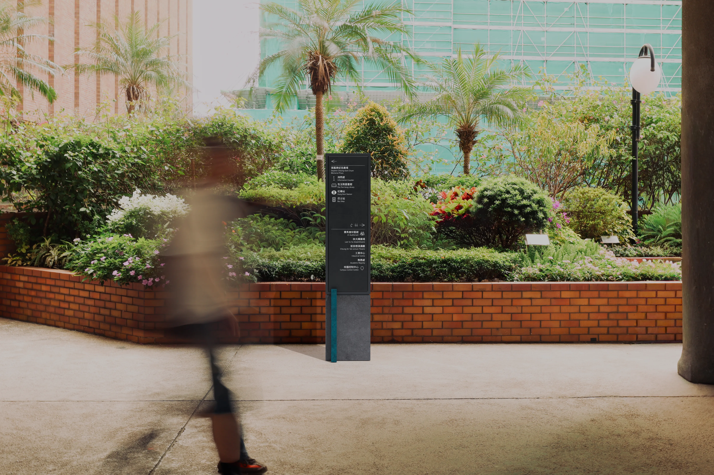
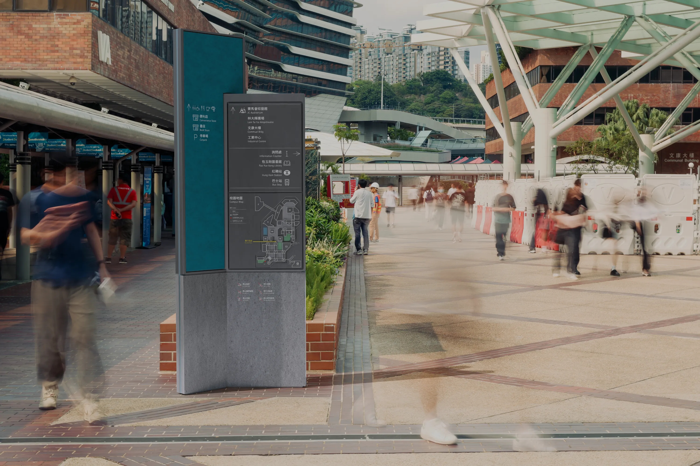
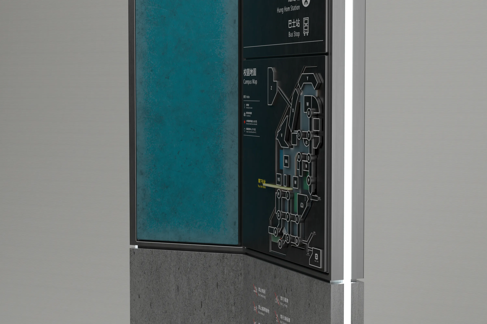
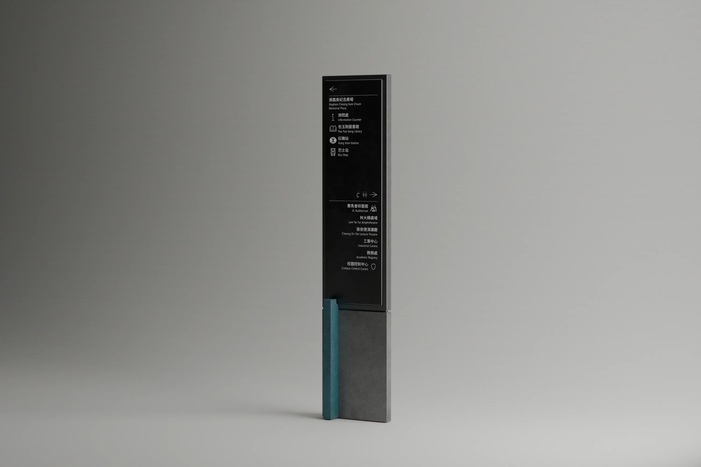
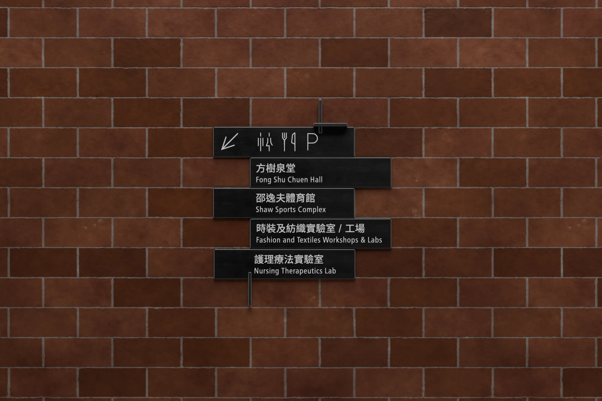
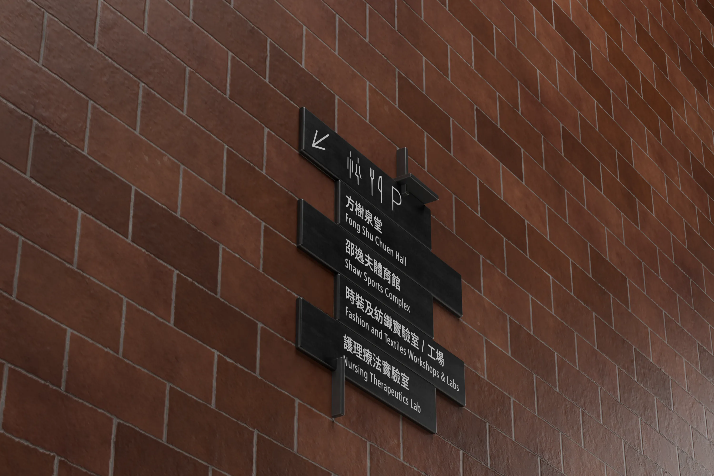
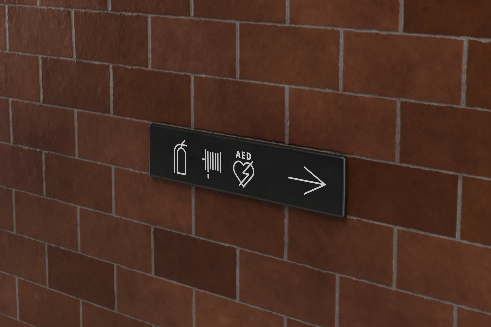
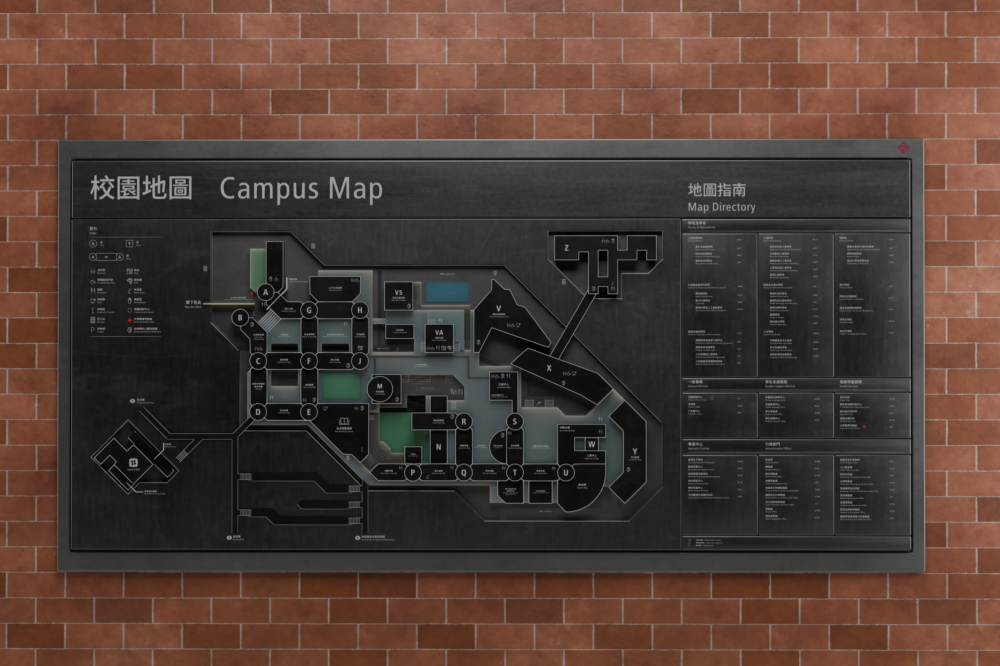
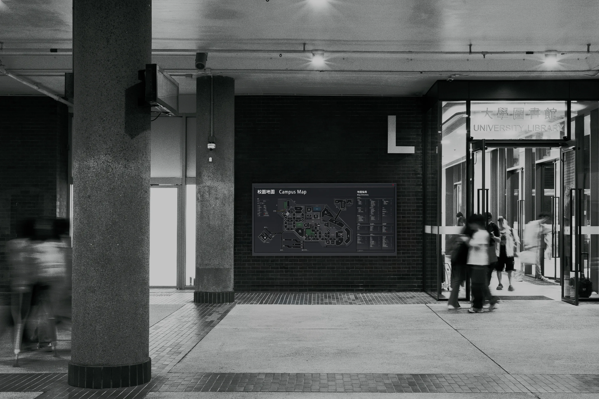
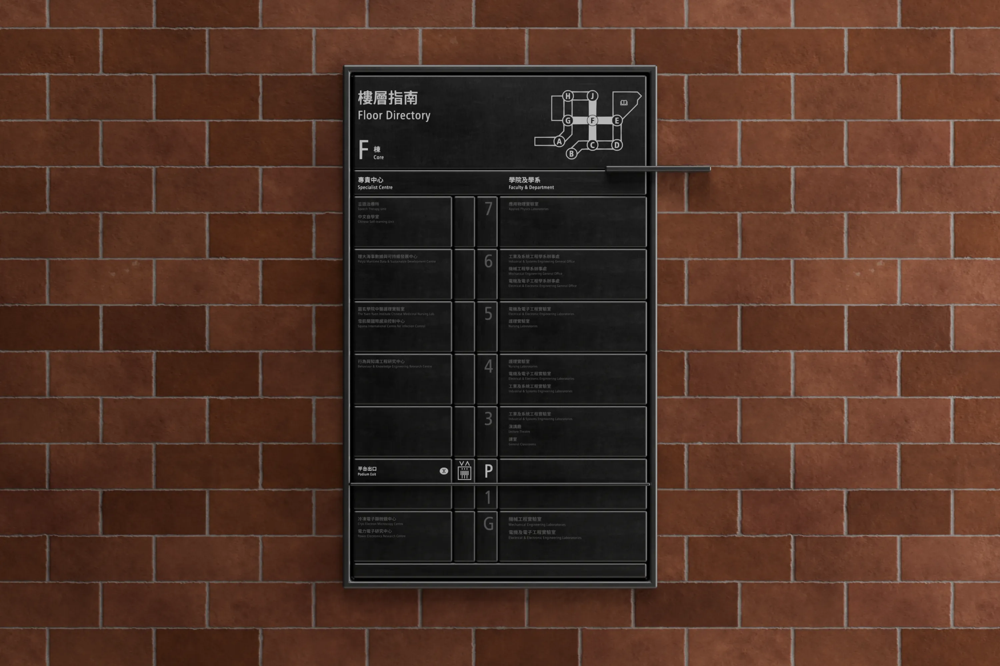
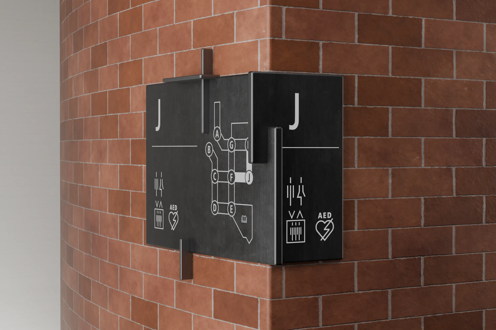